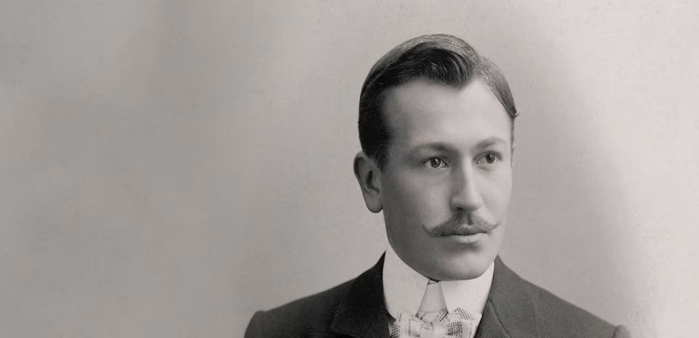

Rolex - швейцарська годинникова марка з інтегрованим та незалежним
виробництвом. Компанія зі штаб-квартирою в Женеві має неперевершену
репутацію завдяки високій якості своєї продукції.
Засновник компанії Ганс Вільсдорф (Hans Wilsdorf) заклав принципи
постійного прагнення до досконалості, що призвело до розробки важливих
досягнень у годинній справі, включаючи Oyster, перший водонепроникний
наручний годинник та автоматичний підзавод за допомогою ротора Perpetual.
Компанія забезпечує основні етапи розробки та виготовлення свого
годинника. Крім того, Rolex бере активну участь у підтримці мистецтва та
культури, спорту та досліджень, а також тих, хто докладає зусиль для
захисту нашої планети. Це відповідальна компанія, чия продукція
розрахована на тривалий термін експлуатації. У своєму прагненні до
досконалості компанія Rolex щодня прагне покращити не тільки свій
годинник, але також свій екологічний і соціальний вплив.
Неперевершена репутація завдяки високій якості продукції та застосовуваним
ноу-хау

Позаду корони
Інновації Rolex, що свідчать про невпинне прагнення засновника компанії до
досконалості, назавжди змінили історію вартового мистецтва по всьому світу